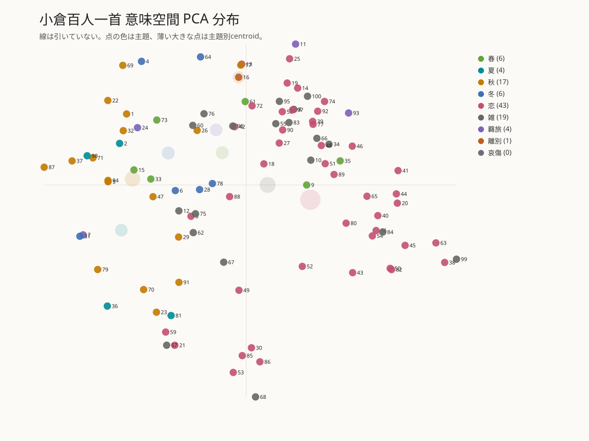
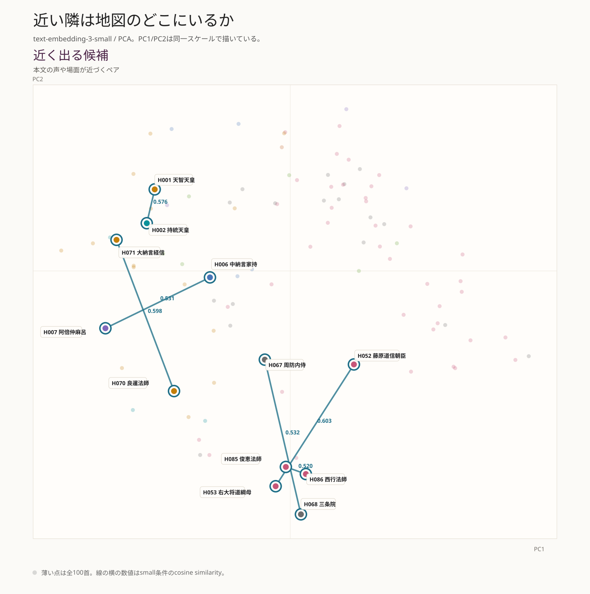
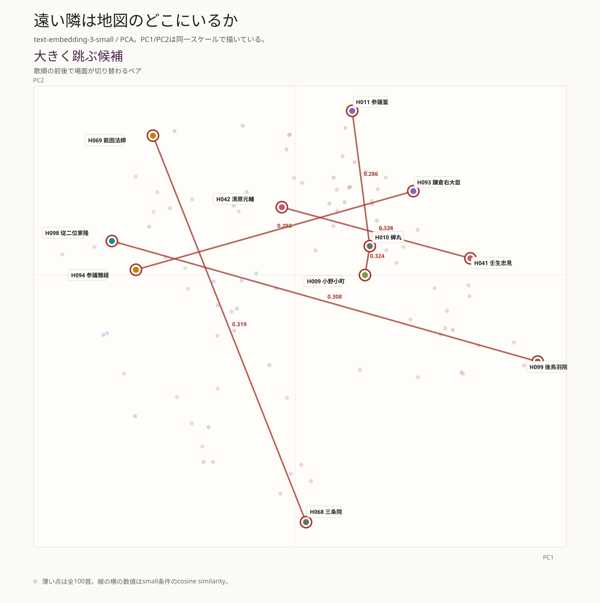
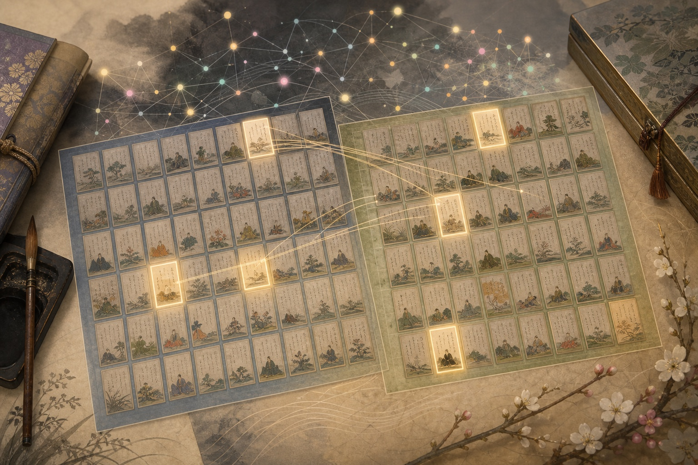

同じ源俊頼でも、百人秀歌側とは別歌として扱う。恋の祈りと山おろしの強さが重なり、差し替えを見るときの焦点になる。
百人秀歌と
小倉百人一首を並べてみる
小倉百人一首の順番には、意味の流れがあるのだろうか。よく似たもう一つの選歌、百人秀歌と並べると、何が同じで、何が少し違って見えるのだろうか。序章で作った「数字の住所」という道具を持って、二つの歌集を同じ地図に置く。きれいな答えを探すのではなく、近い歌、急に跳ぶ歌、片方にだけ現れる歌を手がかりに、次に読むべき場所を探す。
1. 本章の問い
第1章で知りたいのは、小倉百人一首を一枚の地図に置いたとき、どんな景色が見えるのかである。似た歌は近くに集まるのか。順番に意味の流れはあるのか。小倉百人一首と百人秀歌を重ねると、どこがずれて見えるのか。序章で準備した「数字の住所」という考え方を使って、まず次の三つを見る。
第1章は、全体を見渡す章である。まず小倉順を意味空間に置き、近い隣、遠い隣、百人秀歌との差分を見る。10×10については入口だけを示し、第2章で、こぼれる一首と小倉側の差し替え三首をまとめて読む。
この章で見るのは、百人秀歌と小倉百人一首がどれだけ重なっているか、そして重ならない歌が意味空間の中でどのような位置を占めるかである。
小倉百人一首はよく知られているが、百人秀歌は一般にはそれほど馴染みがない。ここでは、百人秀歌を「小倉百人一首と近い関係にある、もう一つの選歌」として扱う。この読み物で使う百人秀歌本文は101首である。以下、文脈上明らかなところでは、小倉百人一首を小倉とも呼ぶ。二つは大きく重なっているが、完全には同じではない。だから、共通する歌と片方にだけ現れる歌を同じ地図に置くと、小倉百人一首の輪郭も見えやすくなる。
順番に意味があるのではないか、と考えるのは、かなり自然な発想である。歌集は、歌をただ袋に入れているだけではない。歌は、ある順番で並んでいる。しかも小倉百人一首と百人秀歌は、多くの歌を共有しながら、差し替えと並びの違いを持つ。百人秀歌をめぐっては、二首一対の歌合形式、百人一首との差し替え・並べ替え、10×10配列などが論点になってきた。[D-5][L-1][L-3]
この章では、その「順番を読む」という古くからの問いを、埋め込みで横から照らしてみる。
分布
恋、季節、旅、雑の歌は、意味空間でどのくらい分かれるのか。
順番
まず説に依らず、小倉順で前後する歌はランダムな順番より近いのかを見る。
差分
百人秀歌と小倉の違いは、意味空間や10×10配置でどう見えるのか。
この章の読み方は単純である。図を見る。数字で気になる場所を拾う。そして、必ず歌へ戻る。ここでいう近さは文学的な価値判断ではなく、モデルが本文を数値化したときの近さである。意味空間は答えを出す機械ではなく、読み直す場所を照らす懐中電灯のようなものだ。

2. まず、きれいには分かれない
最初に、小倉百人一首100首を一枚の地図に置いてみる。使うのは text-embedding-3-small による埋め込みである。入力は、解析用にそろえた歌本文の読み寄り表記、ここでは original_kana と呼ぶ本文列である。本来は1536個の数字で表される場所を、そのままでは人間が見られないので、PCAで2次元の図に写した。点が一首ずつの歌、色が初期の主題タグである。[M-1][M-3]
この入力条件にも限界がある。読み寄り表記は表記ゆれを減らせる一方で、「あき」が秋なのか飽きなのか、「ながめ」が眺めなのか長雨なのか、といった漢字表記が持つ手がかりを弱めることがある。今回の本文では original_kana を基本条件にしたが、漢字仮名交じり本文や注釈を加えた条件で結果がどのくらい変わるかは、別に確かめるべき課題である。
この図で見るのは、点の正確な座標ではない。恋、季節、旅、雑といった歌が、色ごとに島を作るのか。それとも互いににじみ合うのか。その大まかな景色である。
島はあるか
恋、季節、旅などが、色ごとに離れているか。
にじみはあるか
主題が混ざる場所ほど、本文だけでは割り切れない歌が集まる。
影として読む
これは1536次元の関係を2次元へ写した影で、図上の距離だけが近さではない。

横軸と縦軸そのものに、「恋」「季節」のような名前が付いているわけではない。これは高次元の意味空間を二次元へ写した見取り図である。期待していたのは、もしかすると「恋の島」「秋の島」「旅の島」がきれいに分かれる図だった。しかし、実際の結果はもう少し曖昧で、だからこそ面白いものになった。31音だけでは、和歌の意味はそう簡単にほどけない。
次に、同じ点を小倉百人一首の順番どおり、1番から100番まで線でつないでみる。点の位置は変えない。変えるのは、そこに歌順という道筋を重ねることだけである。

線は、すっと一方向へ進まない。同じ雲の中を折り返し、向きを変え、また近い場所へ戻ってくる。数字で確認しても、小倉順はランダム順より遠回りしているわけではない。ただ、進行方向はよく曲がる。MSDで見ると、1首先から3首先くらいの短い範囲では、ランダム順より近場にとどまりやすい。遠くへ一直線に進む道ではなく、近い歌を拾いながら同じ点群の中を折り返す道である。
補助観察線の曲がりとMSDを見る
ここでいうランダムとは、数学でいう厳密なランダムウォークではない。比較に使っているのは、同じ100点をランダムに並べ替え、その順に線を引いた場合である。小倉順の2次元図上の経路長は31.447で、ランダム順平均32.969より少し短い。つまり、全体としてはランダムより遠回りしているわけではない。
一方で、線の進行方向がどれだけ曲がったかを「総回転」として見ると、小倉順は約34.5周分で、ランダム順の上位側に入る。だから、この図から言えるのは「中心のまわりをきれいに旋回している」ではなく、「比較的短い移動をしながら、小刻みに方向転換しているように見える」という程度である。
ランダムウォークらしさを見る道具として、MSDも試した。MSDは、順番に沿って1首先、2首先、5首先へ進んだとき、平均してどれくらい離れるかを見る値である。ここではPCA二次元図の中で計算するので、意味空間そのものの完全な距離ではなく、「この図の上ではどれくらい広がって見えるか」を見る補助診断である。

この図では、1首先、2首先、3首先あたりで小倉順のMSDがランダム順より低い。とくに2首先は、ランダム順の中でもかなり低い側にある。つまり、歌順のごく近い範囲では、点が遠くへ飛びにくい。隣やその少し先に、意味的に近い歌が残りやすい、という読みができる。
ただし、長く進むほどMSDは単純には増え続けない。20首先、30首先になるとランダム平均との差は薄れ、場所によっては上に出る。これは、無限に広がるランダムウォークではなく、限られた点群の中をたどる順序だからである。
序章の模式図で言えば、ここに出ているのは「主題ごとの島が離れた図」ではなく、「点群がにじんで重なり合う図」に近い。恋の歌はやや右へ、秋や冬の自然景はやや左へ寄る。しかし、色ごとの島ができるほどではない。PC1とPC2を合わせた寄与率も、largeで0.1149、smallで0.1168にすぎない。この2次元図は、小倉百人一首全体の答えではなく、読み始めるための入口である。
ここで大事なのは、「分かれなかったからつまらない」ではない。むしろ、分かれすぎないからこそ、小倉百人一首らしい。恋の歌にも季節の景が入り、秋の歌にも孤独や老いが入り、旅の歌にも政治や人生の気配が混ざる。タグは一つでも、歌の中身は一つではない。
これは失敗ではない。むしろ、和歌らしい結果である。和歌は短い。しかも意味は本文だけではなく、詞書、部立、歌枕、本歌取り、出典撰集、後代の注釈に散っている。本文と読みだけをモデルへ渡して見えるのは、その一部である。第1章の地図は完成地図ではない。どこを掘ると面白そうかを示す、最初の地形図である。
3. なぜ small を主軸にするか
さきほどの図では、すでにsmallを使っている。ここで、その理由をまとめておく。同じ入力を、OpenAIの text-embedding-3-large と text-embedding-3-small の両方で試した。largeは3072次元、smallは1536次元のベクトルを返す。大ざっぱに言えば、largeは細部まで拾う解像度の高い地図、smallは軽く扱いやすい地図である。[M-1]
ただし、高解像度なら必ず読みやすい、というわけではない。写真でも、細部がよく写りすぎると、かえって輪郭が見えにくくなることがある。和歌は31音しかない。掛詞、歌枕、部立、注釈といった本文外の文脈も大きい。大きいモデルが拾った細かな語感が、こちらの見たい「配列の流れ」といつも一致するとは限らない。
この第1章では、smallを主軸にする。理由は単純で、本文のみの条件では、小倉順の隣接平均がsmallの方ではっきり出たからである。以後、この章では特に断らない限り、数値・図・近傍候補は text-embedding-3-small、略してsmallによるものとして読む。largeは捨てるのではなく、必要なところで「モデルを替えても同じ候補が残るか」を見るために使う。
この章で必要な数字は三つだけ
表にはいくつか専門語が出てくるが、本文を読むだけなら、まず三つだけでよい。類似度は二首の近さ、percentileはランダム順との比べ方、z-scoreはランダム平均との差の大きさである。
類似度
二首の意味の向きがどれくらい似ているか。高いほど近い候補になる。
percentile
ランダム順をたくさん作ったとき、その何割より上にいたか。
z-score
ランダム平均から、標準的なばらつき何個分だけ離れているか。
技術補足表に出てくる数字の読み方
数式を追う必要はない。ただ、「何を測っている数字か」「大きいほど何を意味するか」「どのくらいなら強いと言えるのか」を確認したいときのために、用語の読み方をまとめておく。
| 言葉 | 何を表すか | 範囲・読み方 |
|---|---|---|
| 次元数 | 一首を表す数字の個数。住所で言えば、何個の座標で場所を表しているか。 | 今回ならlargeは3072個、smallは1536個。多いほど細かいが、常に良いとは限らない。 |
| PC1+PC2の寄与率 | 本来は何千次元もある地図を、紙面用に2次元へ押しつぶしたとき、元の情報をどれくらい残せたか。 | 0から1で読む。0.1168なら約11.7%。低いので、2次元図だけで強い結論は出さない。 |
| 類似度 | 二首が、意味の住所でどれくらい近い向きを向いているか。ここでは cosine similarity を使う。 | 一般には-1から1。今回のような埋め込みでは0台の値が多く、高いほど近い。ただし0.40が絶対的に「近い」とは読まず、他のペアやランダム順と比べる。 |
| ユークリッド距離 | 1536次元ベクトルどうしの直線距離。各次元の差を二乗して足し、最後に平方根を取る。 | 小さいほど近い。ただし今回のsmallではベクトル長がほぼ1なので、隣接ペアの上位・下位を見る限りcosineとほぼ同じ候補が出る。 |
| 同主題 - 異主題 gap | 同じ主題タグのペアが、違う主題タグのペアよりどれだけ近いか。 | 大きいほど主題タグが意味空間にも反映されている。今回の0.0151や0.0184はかなり小さい差である。 |
| 最近傍が同主題の率 | 各歌にとって一番近い歌が、同じ主題タグだった割合。 | 0から1で読む。0.420なら42%。ただし、主題タグの偏りや粗さにも左右される。 |
| z-score | ランダムな順番と比べて、どれくらい上にいるかを標準偏差というものさしで見た値。 | 0ならランダム平均付近。1なら少し高い。2を超えるとかなり目を引くが、それでも証明ではない。 |
| percentile | ランダム順をたくさん作ったとき、その何割より上にいたか。 | 0から1で読む。0.8721なら、ランダム順の約87.2%より上。高いほど珍しいが、探索条件が多いと偶然の上振れも起こる。 |
比較すると、smallは小倉順の隣接平均で少し強く出る。一方、近くに来た歌が同じ主題タグを持つかどうかでは、largeがわずかに上である。どちらか一方が常に優れている、という結果ではない。
ユークリッド距離も確認した。OpenAIの埋め込みは、ベクトルの長さが1になるよう正規化されて返る仕様である。今回のsmallでも、小倉100首のベクトル長は0.9996から1.0004の範囲に収まり、仕様どおりほぼ長さ1でそろっていた。つまり、1536次元空間の単位球面にほぼ乗っている。[M-1] そのため、隣接99ペアの近い上位10組と遠い下位10組は、cosine similarityで見ても1536次元ユークリッド距離で見ても同じだった。本文では読みやすさを優先してcosineを主値にする。
| 指標 | large | small |
|---|---|---|
| 次元数 | 3072 | 1536 |
| PC1+PC2の寄与率 | 0.1149 | 0.1168 |
| 同主題ペア平均類似度 | 0.4161 | 0.4215 |
| 異主題ペア平均類似度 | 0.4010 | 0.4032 |
| 同主題 - 異主題 gap | 0.0151 | 0.0184 |
| 最近傍が同主題の率 | 0.420 | 0.400 |
| 小倉順平均隣接類似度 | 0.4053 | 0.4146 |
| ランダム順比較 z-score | 0.0968 | 1.149 |
| ランダム順比較 percentile | 0.5447 | 0.8721 |
ここでいう percentile 0.8721 は、1万回作ったランダム順のうち、約87.2%より小倉順の隣接平均が高かった、という意味である。上位12.8%に入ったとも言える。ただし、これは配列意図の証明ではない。ここでは、以後の本文を読み進めるための地図を一枚選んだ、と考えればよい。
4. 小倉順の近い隣、遠い隣
ここでいう「隣」は、ごく普通の意味である。小倉百人一首の歌順で、H001とH002、H002とH003のように前後する二首を見ている。H番号は、参照資料の図表ID対応表に対応する。順番に意味の流れがあるかを調べるなら、まず前後の歌を測るのがいちばん素朴な出発点になる。
全体としては強い順序性が出ない。それでも、前後する二首を一つずつ見ると、明らかに近い場所と、急に遠くへ跳ぶ場所がある。ここから先が、意味空間を使う面白いところである。
近く出るペア
H001 天智天皇 - H002 持統天皇 H006 中納言家持 - H007 阿倍仲麻呂 H052 藤原道信朝臣 - H053 右大将道綱母 H067 周防内侍 - H068 三条院 H070 良暹法師 - H071 大納言経信 H085 俊恵法師 - H086 西行法師
H052-H053は恋の嘆き、H070-H071は秋景、H085-H086は恋の内面表現として、比較的納得しやすい。H006-H007のように、冬景と羇旅というタグだけ見ると違うが、遠さ、眺め、場所の感覚で近づくものもある。このあたりは、単純な主題タグより本文の質感が効いている可能性がある。以下の表では、本文条件の主値としてsmallの類似度を掲げる。
次の図で見たいのは、線の長さそのものではない。どの隣接ペアが、PCA二次元図の上でも目印として見えるかである。線は、歌どうしの意味的な近さを読むための補助線であり、直接の影響関係や引用関係を示すものではない。実際の近さは高次元のcosine similarityで測っているので、図と数値はあわせて読む。


近い、遠い、という言葉は、数字だけで終わらせると味気ない。ここからは、実際に歌を並べて読む。人間の読みとAI側の手がかりをどう並べるかは大事な問題なので、方法上の約束だけ先に折りたたんでおく。
読み方の約束人間の読みとAIの読みをどう並べるか
人間は、歌をどう近い、遠い、似ている、対照的だと見てきたのか。それに対して、AIは何を近いと見ているのか。これはかなり面白い。ただし、人間側に cosine similarity のような点数があるわけではない。だから、人間評価は一つの数値ではなく、いくつかの痕跡として集めるのがよい。
| 見るもの | 人間側の手がかり | AI側の手がかり |
|---|---|---|
| 分類 | 勅撰集の部立、季節、恋、雑、羇旅など。これは古典の編集者が置いた大きな分類である。[D-1] | 主題タグごとのまとまり、最近傍が同主題になる率、同主題-異主題gap。 |
| 配列 | 百人秀歌との順序差、二首一組、10×10配置説、差し替え歌をめぐる研究。[L-1][L-3] | 隣接類似度、距離ジャンプ、10×10仮説配置での近傍平均。 |
| 鑑賞 | 注釈書や研究者の読み。「この二首は同じ主題」「ここで場面が転換する」「この歌は前後と響き合う」といった言葉。 | 埋め込みとは別に、AI読者としての仮説コメントを付ける。ただし、これは証拠ではなく、本文へ戻るための読みの案である。 |
つまり、埋め込みは「AIが味わった感想」そのものではない。大量の文章から学習したモデルが、本文を数字の住所に変えた結果である。一方で、私が文章として書く「この二首はこう響くのではないか」というコメントは、埋め込みとは別のAI読者コメントになる。数値としてのAI、読者としてのAI、人間研究者の読み。この三つを横に並べると、このシリーズらしい比較表が作れる。
まず作れそうなのは、「人間が近いと見てきたか」の完全な採点表ではなく、近さを示す手がかりの台帳である。同じ部立に入る。注釈で同じ語や本歌関係が重視される。配列論で対になると読まれている。逆に、前後で時代や主題が切り替わると読まれている。こうした記録を集め、その横に埋め込みの近さ、PCA図上の位置、AI読者コメントを置く。
歌を並べて見る
数字だけでは、何が近いのか分からない。そこで近接候補を、本文と一緒に並べる。似ていると言われれば納得するものもあれば、そうかもしれないが一筋縄ではない、というものもある。そこに、読みに戻る面白さがある。[D-1]
| ペア | 類似度 small |
左の歌 | 右の歌 | 見え方 |
|---|---|---|---|---|
| 近い | 0.576 | H001 天智天皇 秋の田の かりほの庵の とまをあらみ わが衣手は 露にぬれつつ | H002 持統天皇 春過ぎて 夏来にけらし 白妙の 衣ほすてふ 天の香具山 | 冒頭二首はどちらも天皇歌で、季節と衣の感覚を持つ。意味だけでなく、巻頭を作る格式も重なる。 |
| 近い | 0.531 | H006 中納言家持 かさゝぎの 渡せる橋に おく霜の しろきを見れば 夜ぞふけにける | H007 阿倍仲麻呂 天の原 ふりさけ見れば 春日なる みかさの山に 出でし月かも | 冬景と羇旅でタグは違うが、空を見上げる視線、遠さ、白い光の感覚がつながる。 |
| 近い | 0.603 | H052 藤原道信朝臣 明けぬれば くるるものとは 知りながら なほ恨めしき 朝ぼらけかな | H053 右大将道綱母 嘆きつつ 獨りぬる夜の 明くる間は いかに久しき ものとかは知る | 夜明け、待つ時間、恋のつらさが重なる。近く出るのはかなり納得しやすい。 |
| 近い | 0.532 | H067 周防内侍 春の夜の 夢ばかりなる 手枕に かひなく立たむ 名こそ惜しけれ | H068 三条院 心にも あらで憂世に ながらへば 戀しかるべき 夜半の月かな | どちらも雑に置かれるが、春の夜、夢、憂世、月が、はかなさの方向で近づく。 |
| 近い | 0.598 | H070 良暹法師 寂しさに 宿を立ち出でて 眺むれば いづくも同じ 秋の夕暮 | H071 大納言経信 夕されば 門田の稲葉 おとづれて あしのまろやに 秋風ぞ吹く | 秋の夕暮、眺め、風景の広がりがそろう。主題タグでも本文感覚でも近い。 |
| 近い | 0.520 | H085 俊恵法師 夜もすがら もの思ふ頃は 明けやらで ねやのひまさへ つれなかりけり | H086 西行法師 嘆けとて 月やはものを 思はする かこち顔なる わが涙かな | 眠れない夜、もの思い、嘆きの内面が続く。恋タグの内部で声の調子も近い。 |
大きく跳ぶ候補
H009 小野小町 - H010 蝉丸 H010 蝉丸 - H011 参議篁 H041 壬生忠見 - H042 清原元輔 H068 三条院 - H069 能因法師 H093 鎌倉右大臣 - H094 参議雅経 H098 従二位家隆 - H099 後鳥羽院
ここで面白いのは、同じ大分類でも遠く出る場所があることだ。H041-H042はどちらも恋に入るが、埋め込みでは距離が大きい。恋というラベルの内部に、語り方、比喩、声の置き方の違いがあるのだろう。H009-H010とH010-H011は、蝉丸をはさんで前後がどちらも遠く出る。小町の花と身、蝉丸の関、篁の海上という三つの場面が、かなり急に切り替わる。
H093-H094とH098-H099は、後半部の配置を考えると目に留まる。鎌倉右大臣、後鳥羽院、順徳院の周辺は、百人秀歌との違いとも関わる。ただし、ここで「政治的意図が見えた」とは言わない。意味空間で大きく跳んだ場所として、次に文献と本文へ戻る。
| ペア | 類似度 small |
左の歌 | 右の歌 | 見え方 |
|---|---|---|---|---|
| 遠い | 0.324 | H009 小野小町 花の色は 移りにけりな 徒に 我が身世にふる ながめせしまに | H010 蝉丸 これや此の 行くも帰るも 別れては 知るも知らぬも 逢坂の関 | 花の衰えと身の嘆きから、逢坂の関を行き交う人々へ移る。読めばつながりも探せるが、場面は大きく変わる。 |
| 遠い | 0.286 | H010 蝉丸 これや此の 行くも帰るも 別れては 知るも知らぬも 逢坂の関 | H011 参議篁 わたの原 八十島かけて 漕ぎ出でぬと 人にはつげよ あまの釣舟 | どちらも移動を含むが、関の出会いと海上の旅では、場面の作り方が大きく変わる。 |
| 遠い | 0.324 | H041 壬生忠見 戀すてふ わが名はまだき 立ちにけり 人知れずこそ 思ひそめしか | H042 清原元輔 契りきな かたみに袖を しぼりつつ 末の松山 浪こさじとは | どちらも恋だが、名が立つことへの動揺と、契りを破る相手への訴えでは、比喩の組み方が違う。 |
| 遠い | 0.319 | H068 三条院 心にも あらで憂世に ながらへば 戀しかるべき 夜半の月かな | H069 能因法師 嵐ふく 三室の山の もみぢ葉は 龍田の川の 錦なりけり | 月を見つめる内面から、紅葉と川の色彩へ移る。68番は前後で役割がかなり変わる。 |
| 遠い | 0.293 | H093 鎌倉右大臣 世の中は 常にもがもな 渚こぐ 海士の小舟の 綱手かなしも | H094 参議雅経 みよし野の 山の秋風 小夜更けて 故郷寒く 衣うつなり | 海辺の生活感から、山の秋夜と衣を打つ音へ移る。後半部の景色が大きく切り替わる。 |
| 遠い | 0.308 | H098 従二位家隆 風そよぐ 楢の小川の 夕ぐれは みそぎぞ夏の しるしなりける | H099 後鳥羽院 人もをし 人もうらめし あぢきなく 世を思ふ故に もの思ふ身は | 夏の水辺の気配から、人と世への思いへ急に移る。百人秀歌との差分を見る上でも重要な跳び目である。 |
5. 百人秀歌を重ねる
ここから百人秀歌を重ねる。百人秀歌は小倉百人一首と非常に近い歌群を持つが、完全には同じではない。共通歌は多い一方で、百人秀歌側には一条院皇后宮、権中納言国信、源俊頼の別歌、権中納言長方が見える。小倉側には、百人秀歌には同じ形では現れない源俊頼朝臣の小倉歌、後鳥羽院、順徳院が見える。[D-5][S-2]
共通97首
二つの歌集に共通する歌。まずここが大きな重なりを作る。
百人秀歌側4首
小倉百人一首には同じ形では現れない候補。源俊頼だけは歌人が共通する。
小倉側3首
源俊頼小倉歌、後鳥羽院、順徳院。小倉側の差分を読む焦点になる。
では、百人秀歌の方が古いのか。ここも単純には決めない方がよい。百人秀歌を小倉百人一首の原型、またはそれに近い草稿と見る説はある。後鳥羽院・順徳院を欠き、かわりに一条院皇后宮、源国信（権中納言国信）、藤原長方（権中納言長方）などを含むことは、その大きな手がかりになる。一方で、百人秀歌を定家撰としたうえで、小倉百人一首側の差し替えや並べ替えを別の段階に見る説も紹介されている。[L-1] だからこの読み物では、百人秀歌を「古い層、または原型候補として読めるもの」と置き、小倉百人一首との違いを観察する。
ここから一つの仮説が出る。百人秀歌は、単なる下書きではなく、全体として一つの作品としてのまとまりを持っていたのではないか。そこには、二首一組、順番、あるいは別の配置原理が働いていたかもしれない。そのまとまりをもとにして小倉百人一首が作られる過程で、何らかの理由により、後鳥羽院・順徳院、源俊頼の小倉歌のような数首が入ってくる。すると、百人秀歌側では保たれていた構造が、小倉側では少しずれるように見える。
これは「小倉百人一首の文学的価値が低い」という意味ではない。むしろ、小倉百人一首には別の作品意図や歴史的事情が入った可能性がある、ということだ。ここで検査したいのは、百人秀歌を一つの作品として見たとき、その配列上のまとまりが小倉への差し替えでどれくらい保たれるのか、あるいはどこで崩れるのかである。
順番にも差がある。百人秀歌と小倉百人一首で共通する97首について、百人秀歌順と小倉番号を比べると、平均では3首ほどのずれに収まる。ただし、ところどころで大きく動く歌がある。つまり、全体をばらばらに入れ替えたというより、同じ骨格を保ちながら、局所的に並べ替えたように見える。
表は細かい数値を暗記するためのものではない。まずは、二つの歌集がかなり重なっていること、そのうえで局所的に大きく動く歌があることを確認する。
| 百人秀歌順 | 小倉番号 | 歌人 | ずれ |
|---|---|---|---|
| S054 | H068 | 三条院御製 | 百人秀歌では14首早い |
| S057 | H069 | 能因法師 | 百人秀歌では12首早い |
| S058 | H070 | 良暹法師 | 百人秀歌では12首早い |
| S035 | H025 | 三条右大臣 | 百人秀歌では10首遅い |
| S075 | H065 | 相模 | 百人秀歌では10首遅い |
この表から読みたいのは、順位そのものではなく、ずれの性格である。二つの歌集は大きく重なっているが、ところどころで歌群の前後関係が動く。その動いた場所に、次に読む入口がある。
ここで、基準を整理しておく。小倉百人一首の並びを基準にするか、百人秀歌の並びを基準にするか、共通歌だけに絞るかで、見えるものは少しずつ違う。
| 基準 | 固定するもの | 見えやすいもの | 注意点 |
|---|---|---|---|
| 小倉基準 | H001-H100 の百首 | 現在よく知られている小倉百人一首の順番の中で、百人秀歌との差し替えがどこに出るか。 | 百人秀歌側だけの歌は、小倉の枠にはそのまま入らない。 |
| 百人秀歌基準 | S001-S101 の順番 | 二首一組や10×10配列のように、百人秀歌の並びそのものを読む説を試しやすい。 | 101首あるので、10×10に置くときは1首を枠外に置く必要がある。 |
| 共通歌基準 | 両方にある97首 | 差し替えをいったん外し、同じ歌がどのくらい前後へ動いたか。 | 入れ替わりの歌そのものは見えにくくなる。 |
次の表は、直接の置き換え表ではない。片方にだけ現れる歌を、まず一覧として分けたものである。意味空間上の近さや配置上の対応を考えるのは、この一覧を作ったあとの作業になる。
| 側 | 同じ形では現れない歌 | 扱い |
|---|---|---|
| 百人秀歌側 | S053 一条院皇后宮 / S073 権中納言国信 / S076 源俊頼朝臣 別歌 / S090 権中納言長方 | 小倉百人一首には同じ形では入らない候補。S076だけは、歌人は小倉にも残るが歌が異なる。 |
| 小倉側 | H074 源俊頼朝臣 / H099 後鳥羽院 / H100 順徳院 | 百人秀歌には同じ形では入らない候補。後鳥羽院と順徳院は、小倉側の末尾を考えるときに避けて通れない。 |
ここで重要なのは、百人秀歌側の4首と小倉側の3首を、機械的に一対一で結ばないことである。対応関係はあとで検査する。まずは、どちら側にどの歌が現れるのかを、落ち着いて分けておく。
小倉側の三首を本文で見る
差分を番号だけで見ると、話が急に乾く。小倉側にあって、百人秀歌側に同じ形では現れない三首を、ここで歌として読んでおく。[D-1]
人への思いと世への思いが、短い歌の中で折り重なる。PCA二次元図では右下に投影され、後半部を読み返す目印になる。
宮中の古い軒端と、しのぶ草、昔への追懐。後鳥羽院と並ぶ末尾の歌だが、意味空間では同じ飛び地にはならない。
では、この差分はPCA分布上ではどこに出るのか。小倉100首だけの図とは別に、本文のみ条件で小倉100首に百人秀歌側だけの4首を加え、104点でPCAをかけ直した。青いひし形が百人秀歌側だけの4首、赤い丸が小倉側で同じ形では現れない3首である。源俊頼だけは、百人秀歌の別歌 S076 と小倉の H074 が同じ歌人なので点線で結んだ。この点線も、直接の置き換えを示す線ではなく、読み比べるべき場所を示す補助線である。

まず、差分4首は一つの島を作らない。S053 一条院皇后宮、S073 権中納言国信、S090 権中納言長方は、小倉側の恋・雑が多い右上寄りの雲に投影される。一方、S076 源俊頼別歌は、PCA二次元図では左寄りに出る。同じ歌人である H074 源俊頼朝臣との高次元上の近さを cosine similarity で見ると0.361で、同じ歌人だから本文埋め込みでも近い、とは言いにくい。
もう一つ目立つのは H099 後鳥羽院である。小倉側だけに入る3首の中でも、H099はPCA二次元図では右下へ飛び地的に投影される。H100 順徳院はむしろ右上のまとまりに近く見える。これは「高次元の意味空間全体で後鳥羽院だけが孤立する」と言い切る材料ではない。だが、図上の見え方としては強い目印なので、後半部を読むときに本文とcosine近傍へ戻る入口になる。
共通97首だけを見ると、百人秀歌順と小倉順の差は、平均で3首程度の移動に収まる。全体を大きくシャッフルしたというより、近い歌群の中で局所的に組み替えているように見える。だからこそ、差し替え歌が効く。二つの歌集は「ほとんど同じ」だから、違う場所が目立つのである。
差し替えの次に見るのは、百人秀歌の「並べ方」そのものだ。まず、ここははっきり書いておく。百人秀歌については、小倉百人一首との違いとして二首一組、あるいは二首一対の歌合形式に近い、という説明が見える。[D-5][L-5]
つまり、順番に二つずつを組として読む方法がある。百人秀歌の順番を S001、S002、S003、S004... と置いたとき、まずは S001-S002、S003-S004、S005-S006... と見る。そういう説がある。ならば、その組を埋め込みで比べてみればよい。
たとえば、今回採用した百人秀歌順を二首ずつ区切ると、冒頭には次のような組が見える。
| 二首一組の候補 | 歌人 | 小倉番号 | 見え方 |
|---|---|---|---|
| S001-S002 | 天智天皇御製 / 持統天皇御製 | H001-H002 | 巻頭の天皇二首。小倉でも冒頭に残るので、組として見ても分かりやすい。 |
| S003-S004 | 柿本人麿 / 山部赤人 | H003-H004 | 古代の代表的歌人が続く。歌人史のまとまりとして自然に見える。 |
| S005-S006 | 中納言家持 / 阿倍仲麻呂 | H006-H007 | 小倉では5番の猿丸大夫を挟まず、家持と仲麻呂が続く。 |
| S013-S014 | 小野小町 / 喜撰法師 | H009-H008 | 六歌仙を思わせる名が近くに出る。意味の近さより、歌人配置として気になる。 |
| S015-S016 | 僧正遍昭 / 蝉丸 | H012-H010 | 僧と異色の歌人が並ぶ。似ているというより、取り合わせとして読みたくなる。 |
百人秀歌は101首なので、直線順序で奇数-偶数を組にすると、50組を作ったあとに S101 が残る。今回の実験では、まず S001-S002 から S099-S100 までの50組を見る。S101の扱いは、後で伝本や配列説を確認しながら考えればよい。ここで知りたいのは、二首一組という読み方を意味空間に置くと、何が見えるかである。
順番との関係も分けておく。順番とは、今回採用した百人秀歌本文に、歌が S001、S002、S003 と一列に並んでいることである。これはこの読み物が作った説ではなく、まず資料側にある順序である。二首一組とは、その一列を S001-S002、S003-S004、S005-S006 のように二首ずつ区切って読む見方である。つまり、説になっているのは順番そのものではなく、その順番を二首ずつの組として読むところである。別の伝本配置や10×10配列を考える場合には、ペアの作り方も変わりうる。
| 見方 | 例 | この章での意味 |
|---|---|---|
| 小倉順の隣接 | H001-H002、H002-H003、H003-H004... | 第4節で見る基礎検査。小倉百人一首の普通の歌順で、前後する歌が近いかを見る。 |
| 百人秀歌順の全隣接 | S001-S002、S002-S003、S003-S004... | 百人秀歌を一列の順番として見たとき、全体に意味の流れがあるかを見る。 |
| 百人秀歌の二首一組 | S001-S002、S003-S004、S005-S006... | 百人秀歌順を二首ずつ区切った場合、その組の内部が近いかを見る。今回の単純化では奇数-偶数ペアにあたる。 |
| 組と組のつなぎ | S002-S003、S004-S005、S006-S007... | 二首一組で読むなら、組の内部より、組をまたぐ場所の方が切れて見えるかもしれない。そこで偶数-次奇数ペアも見る。 |
そこで、まずは直線順序の奇数-偶数ペア、つまり第1首と第2首、第3首と第4首、第5首と第6首を組にする切り方として試してみる。説を、測れる形に置き換えるのである。

6. まず二首一組を直線で試す
ここから、初めて「二首一組」という別の見方に入る。第4節で見たのは、小倉百人一首の普通の前後関係だった。ここでは、百人秀歌には二首ずつ読む見方がある、という話をそのまま受けて、順番を奇数-偶数ペアに区切る。これは歌IDではなく、第1首と第2首、第3首と第4首を組にする、という切り方の名前である。
試したのは、奇数番と偶数番を二首一組にする、隣接平均を見る、といった素直な検査である。百人秀歌101首の本文のみを text-embedding-3-small で埋め込み、小倉百人一首も比較用に本文のみでかけ直した。計算条件は参照資料にまとめる。[M-3]
ここからの表は、百人秀歌と小倉を同じ手順で比べるために、入力条件とランダム比較の作り方をそろえ直した集計である。そのため、第3節で小倉単独の地図を選ぶために示した要約値とは、平均類似度やpercentileがそのまま一致しない。表ごとに、何をペアとし、何をランダム化したかを確認しながら読む。
| 対象 | 検査 | ペア数 | 平均類似度 | percentile | 読み方 |
|---|---|---|---|---|---|
| 百人秀歌101首 | 全隣接 | 100 | 0.4561 | 0.2510 | 順序全体の連続性は強く出ない。 |
| 百人秀歌101首 | 奇数-偶数ペア | 50 | 0.4574 | 0.4022 | 単純な二首一組は支持しにくい。 |
| 小倉百人一首100首 | 全隣接 | 99 | 0.3737 | 0.9120 | 本文のみ条件では、小倉順がやや高い。 |
| 小倉百人一首100首 | 奇数-偶数ペア | 50 | 0.3649 | 0.5175 | 奇数-偶数型の二首ペアは強く出ない。 |
| 小倉百人一首100首 | 偶数-次奇数ペア | 49 | 0.3827 | 0.9417 | 奇数-偶数型より、偶数-次奇数型の接続が高い。 |
この結果だけなら、百人秀歌の二首一組説は見えにくい。少なくとも、線形順序を奇数-偶数型に切るだけでは、本文埋め込み上の強い意味的まとまりは出なかった。小倉百人一首でも、奇数-偶数型の二首ペアは percentile 0.5175 で、ほぼランダム平均付近である。高めに出たのは、小倉順全体の隣接と、偶数-次奇数型の接続だった。
ここで最初から仮説として立っているのは、百人秀歌を S001-S002、S003-S004 のように区切る奇数-偶数型である。全隣接は順番全体の基礎検査、偶数-次奇数型は組と組のつなぎが切れて見えるかを確かめる補助検査である。したがって、偶数-次奇数型の percentile 0.9417 は面白い観察ではあるが、三通り見た中で高く出た値として慎重に読む必要がある。
ただし、これは「二首一組という見方そのものが間違い」と言っているわけではない。歌合せ的な対、左右の照応、身分や時代の取り合わせ、あるいは巻物・冊子上の見え方は、本文の意味類似度だけでは拾いきれない。だから、次の検査では直線の順番から離れ、10×10の枡目配置を試す。百人秀歌をめぐっては、10×10の枡目配列を扱う研究があることまでは確認できる。[L-3]
7. 10×10の入口
二首一組を直線で試すだけでは、本文埋め込み上の強いまとまりは出なかった。そこで次に見るのが、10×10の枡目である。ここで扱う百人秀歌は101首なので、100マスに置くには1首が余る。この「一首が余る」という小さな問題が、次章の入口になる。
ここでは詳しい検査手順には入らない。要点だけ言えば、1首ずつ枠外に置き、残った100首をいくつかの10×10仮説配置に並べ、近くのマスに意味的に近い歌が来やすいかを調べた。すると、百人秀歌から小倉へ移る差し替え候補の中で、S076 源俊頼別歌が目立った。
ただし、ここは第1章では深追いしない。全101首の中でS076だけが圧倒的に一位というわけではないし、10×10仮説は瀬戸口善則論文の図を再現したものでもない。第1章で押さえておけばよいのは、「二首一組は本文埋め込みだけでは強く出にくいが、10×10へ移ると源俊頼別歌の周辺に小さな山が見える」というところまでである。[L-3]
詳しくは、第2章「こぼれる一首、入ってくる三首」で読む。
8. 本章のまとめ
見えてきたこと
- 本文と読みだけでは、主題クラスタはきれいには分かれない。
- smallでは、小倉順の隣接平均がランダムよりやや高く出る。
- H052-H053、H070-H071、H085-H086は、まず精読したい近接候補である。
- H009-H010、H010-H011、H093-H094、H098-H099は、意味のジャンプとして読む価値がある。
- 百人秀歌との差分では、源俊頼別歌、後鳥羽院、順徳院の周辺を次に読む価値がある。
- 二首一組を直線で見るだけでは、本文埋め込み上の強いまとまりは出にくい。
- 10×10は、第2章で検査手順から読み直すべき別の問いとして残る。
示唆されること
- 小倉順には、全体を貫く一本の流れというより、近い範囲での意味的連続性がある程度見える。
- 百人秀歌の10×10配置では、源俊頼別歌の周辺に小さな山が見え、配列を読む手がかりになる。
- 後鳥羽院・順徳院は、小倉百人一首の末尾の読後感を変える歌として浮かび上がる。
- 源俊頼別歌と小倉側の源俊頼歌の差は、同じ歌人でも代表歌が変わると作品の声が変わって見えることを示唆している。
- 埋め込みの近さは、人間が読みたくなる近接や飛躍を、ある程度拾っているように見える。
- 百人秀歌と小倉百人一首は、近い歌群を別の構造へ組み替えた二つの姿として読む入口になる。
9. 次に読む場所
第1章の結論は、派手な「発見」ではない。むしろ、次に読む場所が絞れた、というのが近い。百人秀歌と小倉百人一首を意味空間に並べると、二つの歌集が大きく重なっていることが見えてくる。これは、両者が近い関係にある選歌集であることを、意味空間の上でも確認する結果といえる。
一方で、片方にだけ現れる歌も、意味空間の中で無作為に散っているわけではない。近い位置に現れる歌をたどると、主題や情景の担い方の違いとして読み比べられそうな箇所がある。小倉順全体は、意味空間で圧倒的に特別とは言えない。それでも、近い隣、遠い隣、百人秀歌との差分を並べると、いくつかの読み戻り先が浮かぶ。
一つ目は、源俊頼である。同じ歌人が、小倉と百人秀歌で別の歌を担う。二つ目は、後鳥羽院と順徳院である。小倉側に入るこの二首が、作品の末尾で何を変えるのかは、本文へ戻って読む価値がある。三つ目は、10×10である。これは第1章では入口だけを置き、第2章で検査手順から読む。
もちろん、これは定家の意図を直接証明するものではない。しかし、二つの歌集を読み比べるための地図としては有効である。第2章では、10×10からこぼれる一首と、小倉側に入ってくる源俊頼、後鳥羽院、順徳院をまとめて読み、個々の歌の近さや離れ方をもう少し詳しく見ていく。
この読み物は、ここで一度止まるのではなく、更新される。数字が変われば書き換える。資料が取れれば言い直す。第1章は、小倉百人一首の謎を解いた章ではない。地図を広げ、次に読む場所を決めた章である。